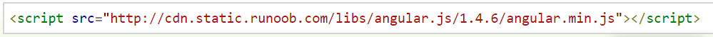

#Angular
AngularJS 通过新的属性和表达式扩展了 HTML。
AngularJS 可以构建一个单一页面应用程序
AngularJS 是一个 JavaScript 框架。它可通过 script标签添加到 HTML 页面。
AngularJS 通过 指令 扩展了 HTML，且通过 表达式 绑定数据到 HTML。
代码及解释
AngularJS 是以一个 JavaScript 文件形式发布的，可通过 script 标签添加到网页中：

AngularJS 通过 ng-directives 扩展了 HTML。
ng-app 指令定义一个 AngularJS 应用程序。
ng-model 指令把元素值（比如输入域的值）绑定到应用程序。//绑定输入域
ng-bind 指令把应用程序数据绑定到 HTML 视图。//除输入域都可绑定
ng-init 指令初始化 AngularJS 应用程序变量。
AngularJS 表达式写在双大括号内：。
AngularJS 表达式把数据绑定到 HTML，这与 ng-bind 指令有异曲同工之妙。
AngularJS 表达式 很像 JavaScript 表达式：它们可以包含文字、运算符和变量。
实例 10 或 undefined undefined
AngularJS 应用
AngularJS 模块（Module） 定义了 AngularJS 应用。
AngularJS 控制器（Controller） 用于控制 AngularJS 应用。
ng-app指令定义了应用, ng-controller 定义了控制器。
（以上代码解析）
AngularJS 模块定义应用:
AngularJS 控制器控制应用: